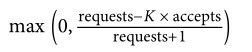

- 00 开篇词 怎样成长为优秀的软件架构师？.md.html
- 01 架构设计的宏观视角.md.html
- 02 大厦基石：无生有，有生万物.md.html
- 03 汇编：编程语言的诞生.md.html
- 04 编程语言的进化.md.html
- 05 思考题解读：如何实现可自我迭代的计算机？.md.html
- 06 操作系统进场.md.html
- 07 软件运行机制及内存管理.md.html
- 08 操作系统内核与编程接口.md.html
- 09 外存管理与文件系统.md.html
- 10 输入和输出设备：交互的演进.md.html
- 11 多任务：进程、线程与协程.md.html
- 12 进程内协同：同步、互斥与通讯.md.html
- 13 进程间的同步互斥、资源共享与通讯.md.html
- 14 IP 网络：连接世界的桥梁.md.html
- 15 可编程的互联网世界.md.html
- 16 安全管理：数字世界的守护.md.html
- 17 架构：需求分析 (上).md.html
- 18 架构：需求分析 (下) · 实战案例.md.html
- 19 基础平台篇：回顾与总结.md.html
- 20 桌面开发的宏观视角.md.html
- 21 图形界面程序的框架.md.html
- 22 桌面程序的架构建议.md.html
- 23 Web开发：浏览器、小程序与PWA.md.html
- 24 跨平台与 Web 开发的建议.md.html
- 25 桌面开发的未来.md.html
- 26 实战（一）：怎么设计一个“画图”程序？.md.html
- 27 实战（二）：怎么设计一个“画图”程序？.md.html
- 28 实战（三）：怎么设计一个“画图”程序？.md.html
- 29 实战（四）：怎么设计一个“画图”程序？.md.html
- 30 实战（五）：怎么设计一个“画图”程序？.md.html
- 31 辅助界面元素的架构设计.md.html
- 32 架构：系统的概要设计.md.html
- 33 桌面开发篇：回顾与总结.md.html
- 34 服务端开发的宏观视角.md.html
- 35 流量调度与负载均衡.md.html
- 36 业务状态与存储中间件.md.html
- 37 键值存储与数据库.md.html
- 38 文件系统与对象存储.md.html
- 39 存储与缓存.md.html
- 40 服务端的业务架构建议.md.html
- 41 实战（一）：“画图”程序后端实战.md.html
- 42 实战（二）：“画图”程序后端实战.md.html
- 43 实战（三）：“画图”程序后端实战.md.html
- 44 实战（四）：“画图”程序后端实战.md.html
- 45 架构：怎么做详细设计？.md.html
- 46 服务端开发篇：回顾与总结.md.html
- 47 服务治理的宏观视角.md.html
- 48 事务与工程：什么是工程师思维？.md.html
- 49 发布、升级与版本管理.md.html
- 50 日志、监控与报警.md.html
- 51 故障域与故障预案.md.html
- 52 故障排查与根因分析.md.html
- 53 过载保护与容量规划.md.html
- 54 业务的可支持性与持续运营.md.html
- 55 云计算、容器革命与服务端的未来.md.html
- 56 服务治理篇：回顾与总结.md.html
- 57 心性：架构师的修炼之道.md.html
- 58 如何判断架构设计的优劣？.md.html
- 59 少谈点框架，多谈点业务.md.html
- 60 架构分解：边界，不断重新审视边界.md.html
- 61 全局性功能的架构设计.md.html
- 62 重新认识开闭原则 (OCP).md.html
- 63 接口设计的准则.md.html
- 64 不断完善的架构范式.md.html
- 65 架构范式：文本处理.md.html
- 66 架构老化与重构.md.html
- 67 架构思维篇：回顾与总结.md.html
- 68 软件工程的宏观视角.md.html
- 69 团队的共识管理.md.html
- 70 怎么写设计文档？.md.html
- 71 如何阅读别人的代码？.md.html
- 72 发布单元与版本管理.md.html
- 73 软件质量管理：单元测试、持续构建与发布.md.html
- 74 开源、云服务与外包管理.md.html
- 75 软件版本迭代的规划.md.html
- 76 软件工程的未来.md.html
- 77 软件工程篇：回顾与总结.md.html
- 加餐 如何做HTTP服务的测试？.md.html
- 加餐 实战：“画图程序” 的整体架构.md.html
- 加餐 怎么保障发布的效率与质量？.md.html
- 热点观察 我看Facebook发币（上）：区块链、比特币与Libra币.md.html
- 热点观察 我看Facebook发币（下）：深入浅出理解 Libra 币.md.html
- 用户故事 站在更高的视角看架构.md.html
- 答疑解惑 想当架构师，我需要成为“全才”吗？.md.html
- 结束语 放下技术人的身段，用极限思维提升架构能力.md.html
- 课外阅读 从《孙子兵法》看底层的自然法则.md.html
- 捐赠
53 过载保护与容量规划
53 | 过载保护与容量规划你好，我是七牛云许式伟。
前面在 “[47 | 服务治理的宏观视角]” 一讲中，我们大体将故障类型分为以下几种。
- 软硬件升级与各类配置变更，即发布。
- 软硬件环境的故障。
- 终端用户的请求。比较典型的场景是秒杀类，短时间内大量的用户涌入，导致系统的承载能力超过规划，产生服务的过载。当然还有一些场景，比如有针对性的恶意攻击、特定类型的用户请求导致的服务端资源大量消耗等，都可能引发服务故障。
软硬件升级与各类配置变更，主要通过发布与升级系统完成。软硬件环境的故障，可以参考 “[51 | 故障域与故障预案]”。
今天我们聊的是故障的第三大类：由终端用户请求导致的故障。它最典型的现象是 “过载”。
过载的成因与后果
我们要思考的第一个问题是：过载的原因是什么？
所谓过载，最直白的理解，当然就是因为活跃的用户超过了资源的承载能力范围，导致某类资源耗尽，进而体现出系统过载。
本质上，这是一个容量规划的问题。
资源怎么会不够了？往往有以下这么几个成因：
其一，用户增长太快了，资源规划上的预期没有跟上，导致资源储备不足。
其二，部分资源因为故障而下线，导致线上活跃的资源不足。举个例子，假设我们做了双机房容灾，但是往往这仅仅是架构上的容灾。从资源储备角度来说，我们需要按2倍的容量来做资源规划，才有可能在某个机房下线后系统不出问题。
其三，系统的关键资源负载能力变低，比如数据库。随着线上服务时间的推移，数据库越来越大，到达了某个临界点，可能就会导致数据库整体的延时变长，响应变慢，同时能够支撑的并发变低，从而导致过载。
其四，某类故障导致系统的反应过激，这通常是因为重试导致的。
为了提高可用性，通常我们在向服务器请求某个 API 失败后，都会进行重试。这种重试行为，可能由负载均衡发起，也可能是发生在客户端。
我们假设，一个 API 失败会重试 2 次，那么对于所有失败的请求来说，请求数放大了 3 倍。如果客户端和服务端都进行了重试，就放大了 9 倍。如果我们再假设，API 失败的原因并不是一上来就失败，而是执行到某个中间步骤，调用了另一个内部服务的 API 而失败，那么很可能内部 API 调用也重试了 3～9 次。这样对这个内部 API 来说，它失败重试的次数就是 9～81 倍。
这种因为重试而带来的请求次数放大，可能会导致系统的资源储备不足，进而引发了过载。
理解了过载的成因，我们第二个问题可能是：过载了，会带来什么样后果？
过载从表现上看，通常会体现为 “资源耗尽”。
比如，CPU 负荷过高，持续接近 100% 下不来。如果 CPU 资源不足以应对请求负载，一般来说，所有的请求都会变慢。这个场景会造成一系列的副作用，比如处理中的请求数量上升。因为处理请求需要较长的时间，同一时间服务器必须同时处理更多的请求（上升到一定数量可能会开始进入队列排队）。这会影响其他所有的资源，包括内存、socket连接以及其他后端服务器资源的消耗也相应增加。
所以需要强调的是，过载通常是会有连锁反应的。某类资源的耗尽，会导致其他资源出现问题。某个服务的过载，经常会出现一系列的资源过载现象，看起来都很像是根本问题，这会使得定位问题更加困难。
过载现象可能会是一个短时现象，过一段时间就撑过去了。但也有很多时候会由于正反馈循环（positive feedback）导致恶化，短时间内就快速形成雪崩效应，击垮系统。
雪崩效应是如何形成的？
我们假设某个服务实例能够承受的正常 QPS 为 10000，如果某个时刻正常业务所产生的自然请求数是 11000，那么其中就有 1000 个请求会失败，如果失败重试导致的请求放大至 9 倍的话，那么系统的 QPS 就增加到 20000，是正常负荷的 2 倍。
这样的高负荷，会直接压垮这个服务实例。在这种情况下，这个服务实例的所有请求会被转移到其他互备实例，从而导致这些互备实例承受了更为巨大的压力。故而，互备实例同样一个个很快被压垮。最终，该服务完全挂掉。
这就是雪崩效应。
过载的监控
过载的危害如此之大，我们怎么及早发现？
一种非常常见，也是很多公司都在做的方式，是给服务的 QPS 设置一个阈值，当 QPS > 阈值时，就触发服务已经过载或即将过载的告警。
这个方式看起来不错，但是它的维护成本很高。就算这个指标在某一个时间段内看起来工作还算良好，但它早晚也会发生变化。有些变动是逐渐发生的，有些则是非常突然的。例如某个服务或客户端的新版本发布，突然就使得某些请求消耗的资源大幅减少。
更好的解决方案，是直接基于该服务所依赖的关键资源，如CPU和内存等，来衡量服务的可用容量。我们为该服务预留了多少资源，这些资源已经用了多少，预计还能够用多久。
我们基于基础资源的用量来估算，比基于服务的 QPS 要稳定可靠得多。在绝大部分情况下（当然总会有例外情况），我们发现简单地基于 CPU 使用量作为服务容量的指标，效果已经非常好了。
过载的应对策略
最后一个问题，我们怎么才能够提前防范服务的过载，把过载可能造成的损失降到最低？
从大的思路来说，无非两个方向，一个是把过载发生的概率变低。另一个是即使发生了过载，也要杜绝雪崩效应，把因为过载产生的损失降到最低。
从技术手段来说，可以由服务的实现方来做，也可以由客户端，也就是服务的调用方来做。
我们先看服务端能够做什么。
首先，应该在过载情况下主动拒绝请求。服务器应该保护自己不进入过载崩溃状态。当前端或者后端进入过载模式时，应尽早尽快地将该请求标记为失败。
当然过载保护可以做得很粗，只有一个全局的负载保护。也可以很细，给每个用户设置独立的负载配额，部分特殊客户甚至可以单独调整负载配额。在理想情况下，当全局过载情况真的发生时，使服务只针对某些“异常”客户返回错误是非常关键的，这样其他用户就不会受影响。
过载保护可以基于 QPS，也可以基于资源利用率实现。但如前文已经说过的那样，基于资源的负载情况判断，会比基于 QPS 更加稳定。
过载保护也可以由负载均衡来做。避免过载是负载均衡策略的一个重要目标。这是个双保险，万一业务服务器没有考虑这块的时候，还有人能够阻止因为过载而崩溃情况的发生。
其次，应该进行容量规划。好的容量规划可以降低连锁反应发生的可能性。容量规划应该伴随着性能测试进行，以确定可能导致服务失败的负载程度。
进行容量规划只能减少触发连锁反应的可能性，但是并不能完全避免。当一个计划内或者计划外的事件导致大部分集群容量同时下线时，连锁反应是不可避免的。负载均衡问题、网络分区事件，或者突发性流量增长，都会导致意料之外的负载问题。有些系统可以根据需要动态增加容量，这可能防止过载发生，但是适当地进行容量规划还是必要的。
最后，服务优雅降级。如果说前面主动拒绝请求，是一种无脑、粗暴的降级方式的话，根据请求的类型和重要性级别来降级，则是一种更为优雅的降级方式。
值得强调的是，优雅降级不应该经常被触发。否则就显示了我们在容量规划上的失误。
另外，代码中平时不太触发的代码分支有可能是不能正常工作的。在稳定运行状态下，优雅降级不会经常触发，这意味着在这个模式下的 SRE 的经验很少，对相关的问题也不够熟悉，这就会升高它的危险性。我们可以通过定期针对一小部分的服务进行压力测试，以便更多地触发这个模式，保证这个代码分支还能正常工作。
聊完了服务端应对过载的手段，我们再来看看客户端能够做什么。
第一个话题是重试。我们可以有这样一些方式来降低重试导致的过载概率。
- 限制每个请求的重试次数，比如 2 次。不要将请求无限重试。
- 一定要使用随机化的、指数型递增的重试周期。如果重试不是随机分布在重试窗口里的，那么系统出现的一个小故障，比如发生某个网络问题，就可能导致这些重试请求同时出现，进而引发过载。另外，如果请求没有成功，以指数型延迟重试。比如第一次是 3 秒后重试，那么第二次 6 秒，第三次 12 秒，以此类推。
- 考虑使用一个全局重试预算。例如，每个进程每分钟只允许重试60次，如果重试预算耗尽，那么直接将这个请求标记为失败，而不真正发送它。这个策略可以在全局范围内限制住重试造成的影响，容量规划失败可能只是会造成某些请求被丢弃，而不会造成全局性的故障。
第二个话题是请求的重要性级别（criticality）。可以考虑将发给服务端的请求重要性级别标记为 1～4 之间的数，它们分别代表 “可丢弃的”、“可延后处理的”、“重要的”、“非常重要的”。在服务端发生过载时，它将优先放弃 “可丢弃的” 请求，次之放弃 “可延后处理的” 请求，以此类推，直到系统负荷回归正常。
第三个话题是请求延迟和截止时间（deadline）。一个超长时间的请求，只是会让一个客户慢。但是结构性的超长时间的请求，它可能会导致系统持续恶化并引起雪崩效应。给 API 请求设置一个小但合理的超时时间，是大幅降低雪崩风险的有效手段。
如果处理请求的过程有多个阶段，比如每个阶段又是由一系列 API 请求组成，该服务器应该在每个阶段开始前检查截止时间，以避免做无用功。
第四个话题是客户端侧的节流机制，也就是是否可能在客户端做自适应的过载保护。客户端的过载保护有它天然的优势，在抛弃超过配额的请求时，它完全不会浪费服务端的资源。
当某个客户端检测到，最近的请求错误中的一大部分都是由于 “配额不足”错误导致时，该客户端就开始自行限制请求速度，限制它自己生成请求的数量。超过这个请求数量限制的请求直接在本地回复失败，而不会真正发到网络层。
我们使用一种称为自适应节流的技术来实现客户端节流。具体地说，每个客户端记录过去两分钟内的以下信息：
- 请求数量（requests）：应用层代码发出的所有请求的数量总计。
- 请求接受数量（accepts）：被服务端接受处理的请求数量。
在常规情况下，这两个值是相等的。随着后端任务开始拒绝请求，请求接受数量开始比请求数量小了。客户端可以继续发送请求直到 requests = K * accepts，一旦超过这个限制，客户端开始自行节流，新的请求在本地会有一定概率被拒绝（在客户端内部）。客户端请求拒绝概率公式如下：

当客户端开始自己拒绝请求时，requests 会持续上升，而继续超过 accepts。这里虽然看起来有点反直觉，因为本地拒绝的请求实际没有到达后端，但这恰恰是这个算法的重点。随着客户端发送请求的速度加快（相对后端接受请求的速度来说），我们希望提高本地丢弃请求的概率。
自适应节流算法可以在整体上保持一个非常稳定的请求速率。即使在超大型的过载情况下，后端服务基本上仍然可以保持 50% 的处理率。这个方式的一大优势是客户端完全依靠本地信息来做出决定，同时实现算法相对简单：不增加额外的依赖，也不会影响延迟。
K 值决定了过载时服务端的拒绝率，默认为 K=2。这意味着服务端过载的时候有 50% 的处理率。如果我们调整为 K=1.1，那么算法变得非常激进，服务端有 90% 的处理率。什么情况下可以这么激进？对那些处理请求消耗的资源和拒绝请求的资源相差无几的系统来说，用 50% 的资源来发送拒绝请求可能是不合理的，这时就可以更激进。
结语
总结下我们今天的内容。我们聊的话题主要是关于过载。
所谓过载，最直白的理解，当然就是因为活跃的用户超过了资源的承载能力范围，导致某类资源耗尽，进而体现出系统过载。
当一个系统过载时，某些东西总是要被牺牲掉。一旦一个服务越过了临界点，服务一些用户可见错误，或者低质量结果，要比尝试继续服务所有请求要好。理解这些临界点所在，以及超过临界点系统的行为模式，是所有想避免因过载而引发雪崩效应的 SRE 所必需具备的。
如果不加小心，某些原本为了降低服务背景错误率或者优化稳定状态的改变，反而会让服务更容易出现事故。比如，在请求失败的时候重试、负载自动转移、自动杀掉不健康的服务器、增加缓存以提高性能或者降低延迟等等。这些手段原本都是为了优化正常情况下的服务性能，但是他们某种程度上来说，也是过载与雪崩效应的成因。
过载引发的雪崩效应可能时间很短，所以考虑怎么让我们的系统能够自动应对过载是非常必要而且重要的事情。
如果你对今天的内容有什么思考与解读，欢迎给我留言，我们一起讨论。下一讲我们将聊聊 “业务的可支持性与持续运营”。
如果你觉得有所收获，也欢迎把文章分享给你的朋友。感谢你的收听，我们下期再见。
© 2019 - 2023 Liangliang Lee. Powered by gin and hexo-theme-book.